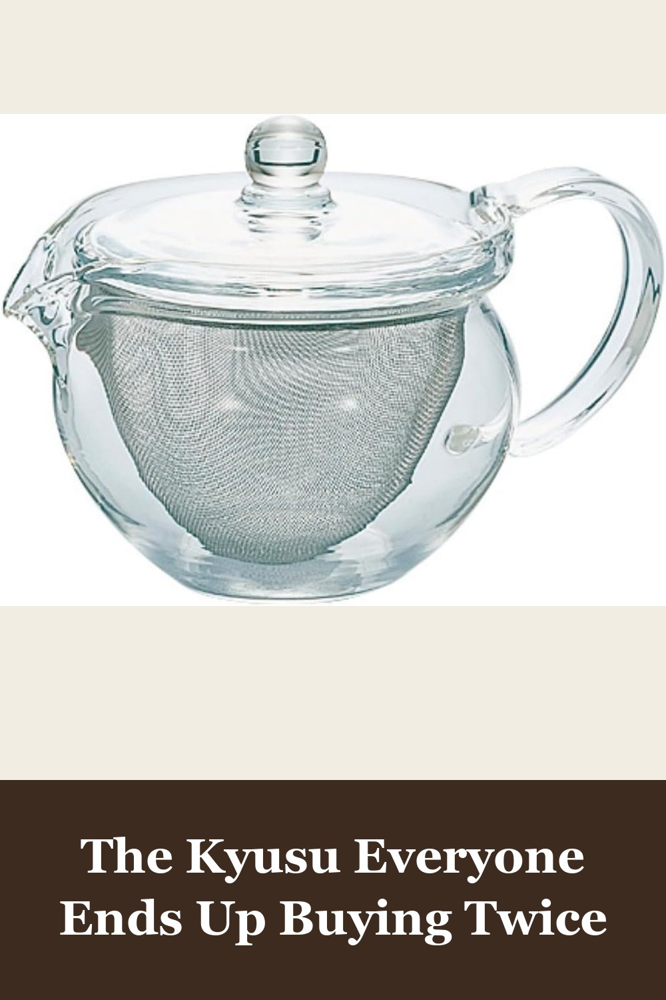
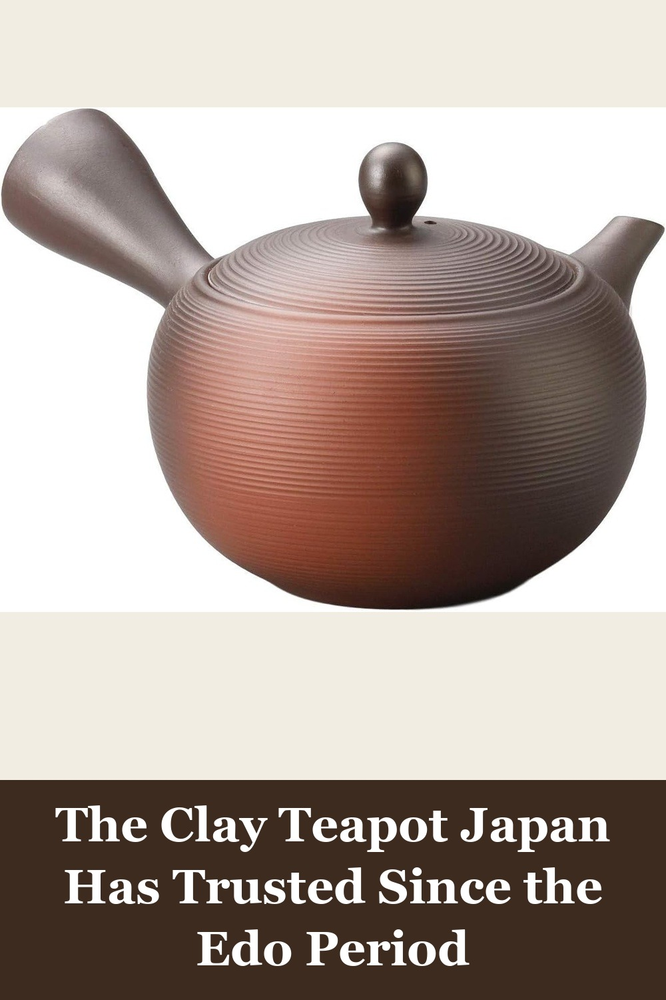
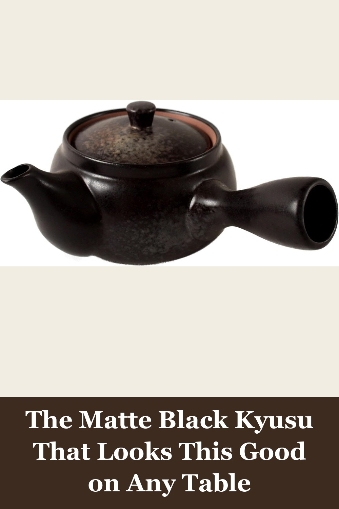

Hario ChaCha Kyusu "Maru" Tea Pot, 300ml
Japan's best-selling glass kyusu — a wide, roomy mesh basket lets loose leaves unfurl fully, and the heat-treated glass lets you watch the tea color develop as it steeps. Dishwasher safe.
I bought a bunch of quality loose leaf tea and a ball infuser - and it didn't take long for me to hate using the ball infuser... I am so glad I checked Amazon and found this one... It really is a beautiful, functional design.— verified Amazon buyer
View on Amazon →
Japanese Teapot Kyusu Tokoname Youhen Clay Teapot 11.8 fl oz, Fusen L161
Hand-finished Tokoname-yaki clay from Japan's oldest pottery town, with a built-in clay strainer for loose-leaf sencha. Thin walls, a drip-free pour, and a burnished earthy glaze that's never quite the same twice.
I love drinking tea from a teapot but I often forget about it so I would wind up drinking a cold pot of tea. This one is a perfect size for two or three small cups or one 11-12 ounce mug... I love this teapot and use it every day.— verified Amazon buyer
View on Amazon →
Mino ware Japanese Pottery Teapot Kyusu Kurobizen Matte Black with Infuser, SYK003
A modern matte-black take on 1,300-year-old Mino ware pottery, made in Japan with a removable infuser for easy cleanup. The traditional side handle gives you full control over the pour.
This is a wonderful little tea pot that has a good capacity and retains heat nicely. The colors are wonderfully organic and it's light weight plus a sturdy side handle makes for a very enjoyable pour... absolutely recommend this cool lil tea steeper.— verified Amazon buyer
View on Amazon →